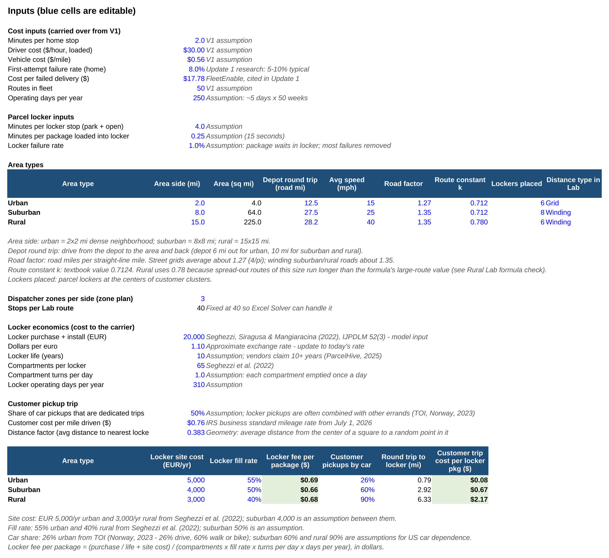
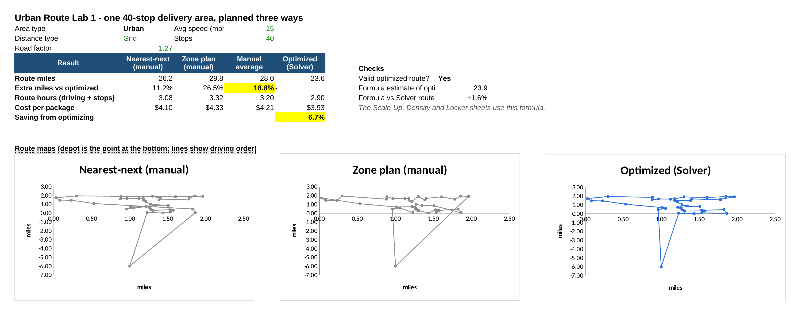
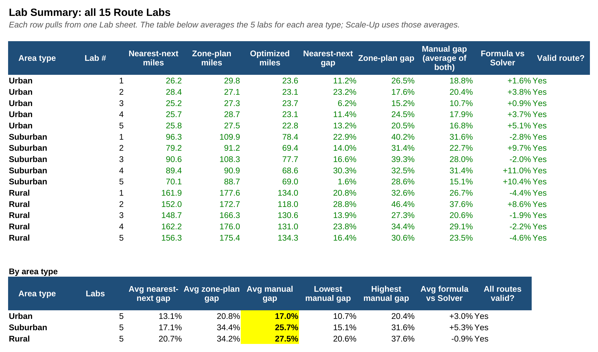
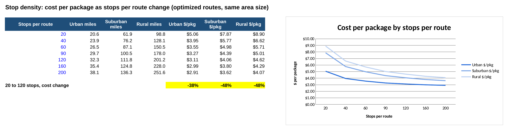
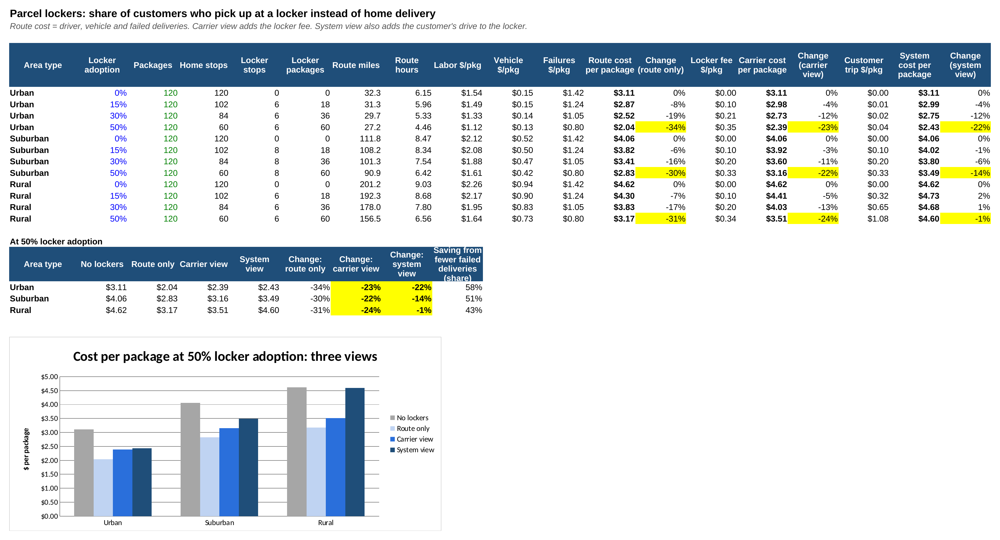
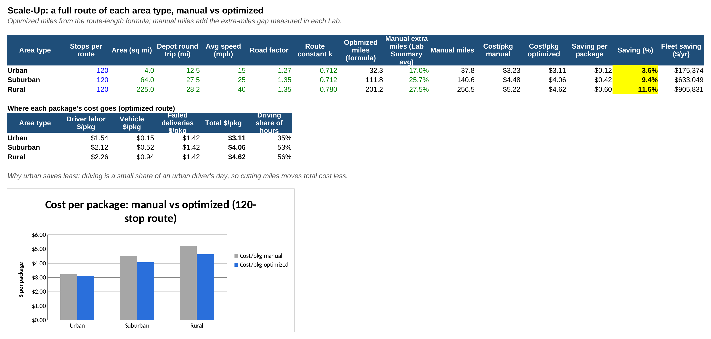
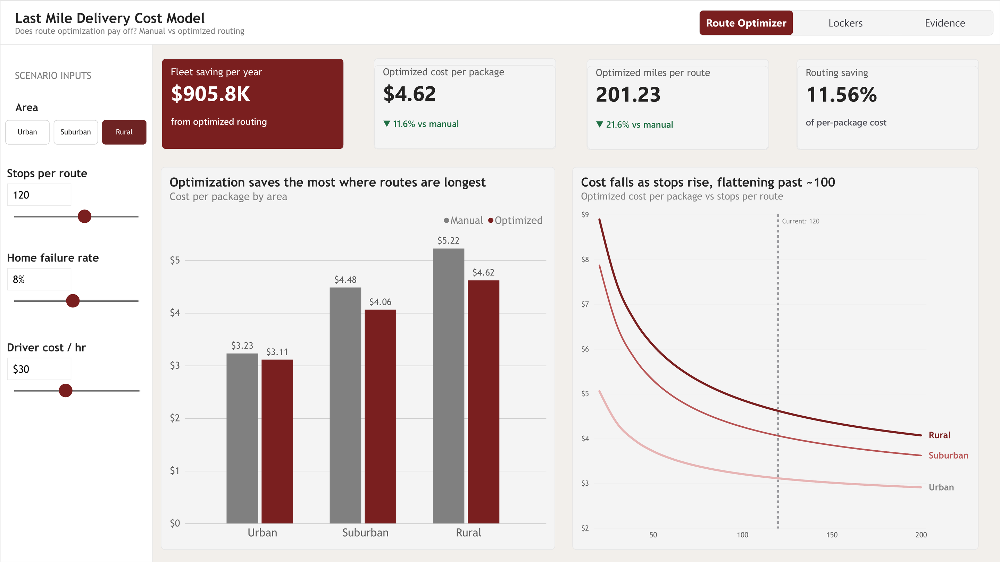
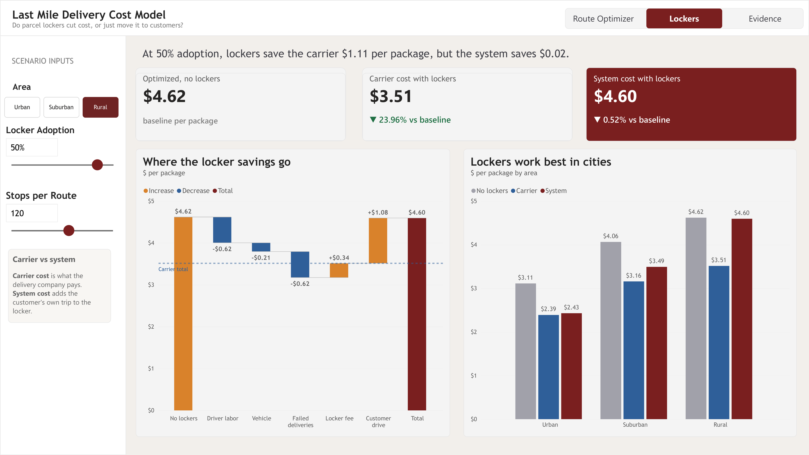
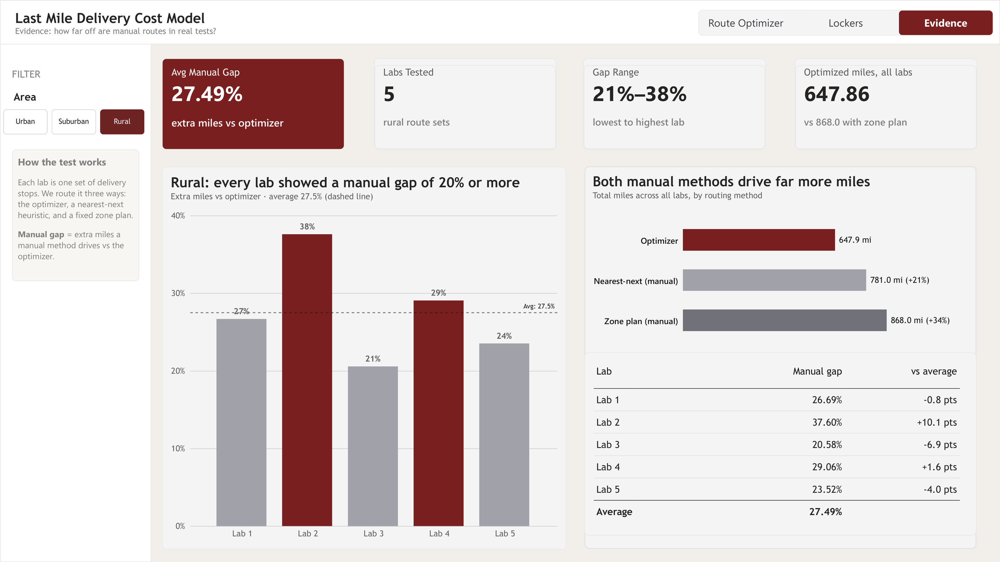

passion project · Oct 2026 – present
Last-Mile Route Optimization
The last mile is the most expensive leg of shipping, at about 53% of total shipping cost. I built an Excel model that plans 15 simulated delivery areas three different ways, measures how many extra miles manual routing really costs, and prices the levers a carrier can pull: optimized routes, denser routes and parcel lockers. A Power BI dashboard turns the model into an interactive tool.
the question
Where does the money go?
I started by using generative AI to work through industry reports and case studies from UPS, Amazon and last-mile analysts. Five cost drivers kept coming up: driver labor, extra miles from inefficient routing, failed deliveries, low stop density and fast-delivery expectations. Most of them come back to one thing: how much driver time each package takes.
The first version of the model (V1) compared a manual and an optimized 120-stop route, but it assumed manual routes drive 20% more miles. Every result depended on that number. So V2 and V3 measure the gap instead of assuming it.
- 2 min per home stop
- $30/hr loaded driver cost
- $0.56 per vehicle mile
- 8% first-attempt failure rate (5–10% typical)
- $17.78 per failed delivery
- 50-route fleet · 250 operating days/yr
the engine
Excel route-cost model (V3)
Every assumption lives on one Inputs sheet (blue cells). Change one and the whole workbook updates. No macros and no add-ins beyond Solver: the routing is done with formulas.
1 · Route Labs (15 sheets)
Each lab is a 40-stop delivery area with a depot and a formula-built distance table: street-grid distance for urban, straight line × 1.35 for suburban and rural roads. Every area is planned three ways and drawn as a map:
- Nearest-next (manual): the driver always goes to the closest unvisited stop. Built with MIN + MATCH.
- Zone plan (manual): a dispatcher splits the area into a 3×3 grid and snakes through it. Built with SMALL + MATCH.
- Optimized: Excel Solver (Evolutionary, AllDifferent constraint) searches stop orders for the shortest route.
2 · Lab Summary → Scale-Up
The Lab Summary collects all 15 labs: the average, lowest and highest extra-miles gap per area type. Solver is only practical up to about 40 stops, so the Scale-Up sheet prices a full 120-stop route with a standard route-length formula plus the measured average gap:
That's the Beardwood–Halton–Hammersley approximation (k = 0.7124). Each lab has a check cell comparing it to the Solver route, and they land within about 5%.
3 · Density
Cost per package as stops per route go from 20 to 200, for each area type. Shows where adding stops stops paying off.
4 · Lockers + V1 Check
Cost when 0–50% of customers pick up at a parcel locker, in a carrier view (route cost + locker fee) and a system view (adds the customer's drive to the locker). V1 Check re-runs the original formula on V1's own inputs.
Screenshots

screenshots/excel-inputs.png
screenshots/excel-route-lab.png
screenshots/excel-lab-summary.png
screenshots/excel-density.png
screenshots/excel-lockers.png
screenshots/excel-scale-up.pngthe interface
Power BI dashboard
The dashboard turns the Excel model into something you can play with. It's built on 29 DAX measures, with four sliders that recalculate everything live: stops per route, home failure rate, driver cost and locker adoption.

screenshots/pbi-route-optimizer.png
screenshots/pbi-lockers.png
screenshots/pbi-evidence.pngwhat the model says
Findings
The 20% assumption only holds in cities
Average extra miles driven by manual plans, across 5 labs per area type. The dashed line is V1's assumed 20%.
Scale 0–32%. Dashed line = 20% assumed in V1.
The best first move depends on where the route runs
Change in cost per package from each lever, on a 120-stop route (routing uses the 5-lab average gap, for 50 routes × 250 days).
| Area | Optimized routes | 50% lockers (system) | 20 → 120 stops | First move |
|---|---|---|---|---|
| Urban | −3.6% | −22% | −38% | Lockers |
| Suburban | −9.4% | −14% | −48% | Lockers, then routing |
| Rural | −11.6% | −0.5% | −48% | Routing |
Density beats everything
Going from 20 to 120 stops in the same rural area cuts cost per package from $8.90 to $4.62, nearly 50%. Past 120 stops the curve flattens, because the fixed drive to and from the depot is already spread across many packages. That depot round trip is 39% of an optimized urban route's miles but only 14% of a rural one.
Lockers pay for carriers, not always for customers
Locker stops have about a 1% failure rate vs. 8% at the door. After paying for the lockers ($0.66–0.70 per package: hardware over a 10-year life plus site cost), 50% adoption still cuts carrier cost 22–24% everywhere. Add the customer's drive to the locker (IRS $0.76/mile) and the saving is 22% urban, 14% suburban, and it disappears in rural areas.
honest caveats
Limits & next steps
- Delivery areas are simulated, not real addresses.
- Distances are street-grid or straight line × 1.35, not GPS road distances.
- Solver searches for the best route but can't prove it's the shortest possible.
- Locker life (10 years) is an assumption based on vendor claims; cost and fill-rate inputs come from Seghezzi et al. (2022).
Next
Run the labs on real map data instead of estimated road distance, and finish formatting the Power BI dashboard.
open them yourself
Download the files
where the numbers come from
Sources
Every sourced input is also labeled next to its cell on the workbook's Inputs sheet. Industry and vendor figures are directional benchmarks, not audited numbers.
Phase 1 research & V1 model
- Last-Mile Delivery Statistics 2026, SmartRoutes. Last mile ≈ 53% of total shipping cost; urban vs. rural cost per package.
- Breakdown of Last-Mile Delivery Costs, Dropoff. Labor, fuel and equipment shares of last-mile cost.
- Why Your Final Mile Is Bleeding Money, FleetEnable. $17.78 per failed delivery (model input).
- Last-mile is the expensive mile, ATLAS. 5–10% first-attempt failure rate (model uses 8%).
- Making sense of the ever so expensive last mile, Logistics Insider. Manual routes run ~20–25% more miles (V1's 20% assumption).
- How Much to Charge for Delivery Per Mile, Upper. $0.56/mile vehicle cost and $30/hour loaded driver cost.
- UPS Accelerates Use of Routing Optimization Software, UPS via 3BL. ~120-stop typical route; ORION saves ~100M miles a year.
- UPS ORION: Optimizing Delivery Routes, INFORMS. Route optimization case study.
- Regionalize and Scale: Amazon's Fulfillment Network Design, INFORMS Journal on Applied Analytics. Amazon regionalization and cost to serve.
- Evaluating the Locker Alliance pilot, NUS IORA. 11 parcels/hour to lockers vs. 5/hour to homes.
- Influence of self-pickup incentives on last-mile deliveries, Research in Transportation Economics (TRID). Locker savings stronger in urban than rural areas.
- Do it right the first time: Vehicle routing with home delivery attempt predictors, Lim et al. (SUFE summary). Failure-aware sequencing cuts failed attempts ~10%.
V2–V3 model inputs & method
- Seghezzi, A., Siragusa, C. & Mangiaracina, R. (2022). Parcel lockers vs. home delivery: a model to compare last-mile delivery cost in urban and rural areas. International Journal of Physical Distribution & Logistics Management, 52(3), 213–237. Locker purchase cost, compartments, site cost and fill rates.
- Hovi, I. B. et al. (2023). Parcel lockers as delivery solution: Usage patterns, experiences and effects of network expansions. TØI Report 1959/2023, Institute of Transport Economics (Norway). How customers travel to lockers; pickups combined with other errands.
- Internal Revenue Service (2026). Announcement 2026-11, Optional Standard Mileage Rates, Internal Revenue Bulletin 2026-29. 76¢/mile business rate from July 1, 2026 (customer trip cost).
- ParcelHive (2025), vendor product information. Lockers claimed to last 10+ years (basis for the 10-year life assumption).
- Beardwood, J., Halton, J. H. & Hammersley, J. M. (1959). The shortest path through many points. Proceedings of the Cambridge Philosophical Society, 55(4), 299–327. Route-length formula (k = 0.7124) used on Scale-Up, Density and Lockers.